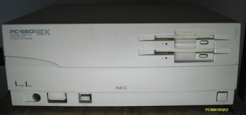
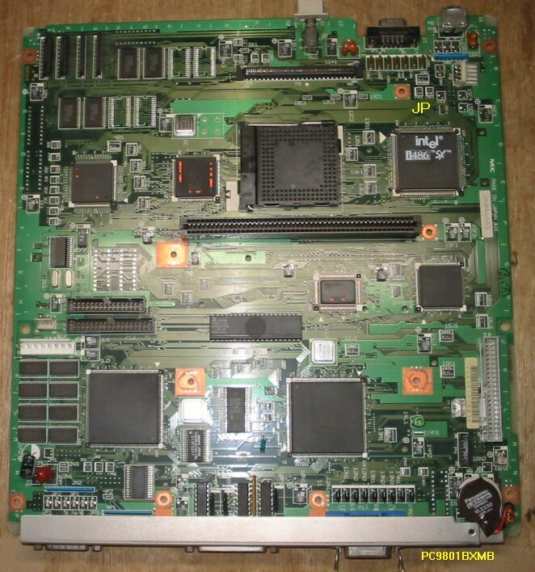
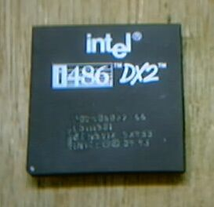
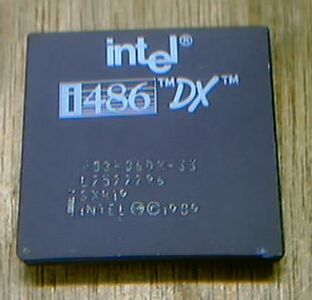

486DX2へのアップグレード

PC9801BXのマザーボード


486SXや486DXを使っているマシンで、簡単に486DX2にアップグレードできる場合があります。 ここで取り上げた9801BXの場合、486SXの20MHｚで、i487を取り付けるソケットがついており、
そこにi487を取り付ければ、486DXの20MHzマシンになるわけです。そのソケットに486DX2を取り付け、 486SXの動作をとめてやれば、486DX2の40MHzマシンになります。ソケットの周りを注意深く見ると、
使われていないジャンパーピンが、1個見つかります。(マザーボードの写真で黄色くJPと表示してある)そこにジャンパープラグを差し込んでみると、 見事にCPUが止まりました。そして、i487用のソケットに、486DX2を差し込んで立ち上げると、
486DX2の40MHz動作になっています。ちょっとした計算をするプログラムを動かしてみると、 時間が約半分になっており、うまく動作しているようです。このジャンパーは、付いていない
こともあるようで、その場合には、CPUのしかるべきpinを、GROUNDするということになります。

私の持っている９８で、486DXを使っていたのは、PC9821ASで、CPUが、MACの一部の機種のように、 ドーターカード上にアセンブルされており、しかも半田付けではなく、ソケットについているので、
単にDX2に取り替えるだけで、9821APと同じ、66MHzになります。
PC9801のページに戻る